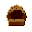

Tier 0 — Survival¶
Armor¶
| Item | What it’s for | Made at | Tags |
|---|---|---|---|
| RC |
Basic shoulder wrap | hand |
|
| RFragged footwraps | Foot insulation | hand |
|
| RH  ragged hood |
Head insulation | hand |
|
| RLragged leg wraps | Leg insulation | hand |
Consumable¶
| Item | What it’s for | Made at | Tags |
|---|---|---|---|
| CB |
Stop bleeding, restore some health | survival, medical, heal | |
| HS |
Crushed herbs in animal fat | survival, medical, heal |
Food¶
| Item | What it’s for | Made at | Tags |
|---|---|---|---|
| BL |
Dark glossy bramble berry | survival, food, berry | |
| BL |
Sweet purple-blue forest berry | survival, food, berry | |
| HB |
Small red haw-fruit | survival, food, berry | |
| HA |
Small hard-shelled hazelnut | survival, food, nut | |
| JB |
Small blue-grey juniper berry | survival, food, berry | |
| RB |
Bright red rowan berry | survival, food, berry | |
| SB |
Bright orange coastal berry | survival, food, berry | |
| TU |
Grown food root | farming, crop, turnip |
Item¶
| Item | What it’s for | Made at | Tags |
|---|---|---|---|
| BB |
Carry water short-distance. Equip + RMB at water to fill. | survival, water, container | |
| CP |
Unfired clay vessel | survival, ceramic, clay | |
| CP |
Clay pot filled with water | survival, water, container | |
| EV |
Fired clay storage vessel | survival, ceramic, vessel | |
| PR |
Long-burning resin torch | survival, fire, torch | |
| RW |
Portable water carry (rawhide). Equip + RMB at water to fill. | survival, water, container | |
| SS |
Small game loop snare | survival, hunting, trap | |
| TW |
Safer drinking water | survival, water, container | |
| WF |
Water carry (filled) | survival, water, container | |
| WF |
Rawhide waterskin (filled) | survival, water, container | |
| WF |
Funnel fish trap for streams | survival, hunting, fishing |
Material¶
| Item | What it’s for | Made at | Tags |
|---|---|---|---|
| AC |
Small woody alder cone | survival, forage, dye | |
| BS |
Quick bark panels | survival, forest, bark | |
| BA |
Fine-grained volcanic rock | geology, rock, basalt | |
| BB |
Armful of dead branches | survival, wood, branch | |
| BO |
Roofing and bedding | survival, thatch, bundle | |
| CS |
Sow for carrots | farming, seed, carrot | |
| CH |
Carbon-dense fuel | survival, fuel, charcoal | |
| CW |
Plain wood planks or blocks | survival, wood, generic | |
| CB |
Crude bark tie and cover strip | survival, forest, bark | |
| CR |
Hollow reed stems | survival, plant, reed | |
| DA |
Seasoned dry alder log | survival, wood, log | |
| DA |
Seasoned dry ash log | survival, wood, log | |
| DB |
Seasoned dry beech log | survival, wood, log | |
| DB |
Seasoned dry birch log | survival, wood, log | |
| DF |
Catch the first ember | hand |
survival, fire, tinder |
| DF |
Seasoned dry alpine fir log | survival, wood, log | |
| DH |
Seasoned hardwood log (unidentified) | survival, wood, log | |
| DK |
Bridge tinder to fuel | survival, fire, kindling | |
| DL |
Seasoned dry larch log | survival, wood, log | |
| DM |
Seasoned dry maple log | survival, wood, log | |
| DO |
Seasoned dry oak log | survival, wood, log | |
| DP |
Seasoned dry pine log | survival, wood, log | |
| DS |
Seasoned dry spruce log | survival, wood, log | |
| DW |
Seasoned dry willow log | survival, wood, log | |
| EB |
Fired clay building brick | survival, ceramic, brick | |
| FI |
Generic rough stone | survival, stone, raw | |
| FF |
Fast-catch starter twigs | survival, forest, stick | |
| FC |
Dried alpine fir cone | survival, tinder, cone | |
| FS |
Sow for a fibre crop | farming, seed, flax | |
| FS |
Ret into line fibre | farming, crop, flax | |
| FL |
Fine grain flour | survival, food, grain | |
| FB |
Unprocessed wild berries | hand |
survival, food, berries |
| FS |
Small sticks for early fuel | survival, forest, stick | |
| FA |
Freshly cut alder log | survival, wood, log | |
| FA |
Freshly cut green ash | survival, wood, log | |
| FB |
Freshly cut green beech | survival, wood, log | |
| FB |
Freshly cut green birch | survival, wood, log | |
| FF |
Freshly cut alpine fir log | survival, wood, log | |
| FH |
Freshly cut hardwood (unknown species) | survival, wood, log | |
| FL |
Freshly cut larch log | survival, wood, log | |
| FM |
Freshly cut green maple | survival, wood, log | |
| FO |
Freshly cut green oak | survival, wood, log | |
| FP |
Freshly cut green pine | survival, wood, log | |
| FS |
Freshly cut spruce log | survival, wood, log | |
| FW |
Freshly cut willow log | survival, wood, log | |
| GR |
Coarse-grained igneous rock | geology, rock, granite | |
| GG |
Coarse ground grain | survival, food, grain | |
| HA |
Natural striking cobble | survival, stone, tool | |
| HR |
Straight hazel rod | survival, wood, rod | |
| IB |
Frozen water block | survival, ice, frozen | |
| KB |
Dry small-stick bundle for fire | survival, fire, kindling | |
| LI |
Calcium carbonate sedimentary rock | geology, rock, limestone | |
| LN |
Discrete limestone cobble | hand |
geology, rock, limestone |
| LM |
Seed cake left after pressing oil | feed, fertiliser, press-cake | |
| LO |
Drying oil pressed from flax seed | oil, linseed, flax | |
| LD |
Mineral soil fill | survival, soil, dirt | |
| LS |
Fine quartz sand | survival, soil, sand | |
| LS |
Packed snow | survival, snow, winter | |
| MS |
Score maple bark to collect | survival, food, liquid | |
| MA |
Metamorphic calcium carbonate | geology, rock, marble | |
| MD |
Medium-length dry firewood log | survival, wood, log | |
| MF |
Mixed twigs from the forest floor | survival, forest, stick | |
| PE |
Sturdy bulk-earth building block | survival, soil, construction | |
| PR |
Sticky pine tree sap | survival, resin, pine | |
| PF |
Twistable binding fiber | survival, fiber, cordage | |
| RA |
Unprocessed raw hide | survival, hide, raw | |
| RC |
Workable raw clay | survival, clay, ceramic | |
| RC |
Strong dried hide strip | survival, cordage, rawhide | |
| RS |
Evaporite salt crystal | geology, mineral, salt | |
| RO |
Simple cord for tying | hand |
survival, cordage, rope |
| RR |
Smooth cobbles for pounding and striking | survival, stone, river | |
| SB |
Quick but light calories | survival, food, berries | |
| SN |
Dense foraged calories | survival, food, nuts | |
| SA |
Crumbly layered rock | geology, rock, sandstone | |
| SC |
Basic cooked meal | campfire |
survival, food, cooked |
| SL |
Easily-splitting rock | geology, rock, slate | |
| SD |
Short dry firewood log | survival, wood, log | |
| SD |
Small dry stick bundle | survival, wood, stick | |
| SR |
Sticky spruce sap | survival, resin, spruce | |
| TR |
Sticky tree sap resin | hand |
survival, resin, adhesive |
| TS |
Sow for a food root | farming, seed, turnip | |
| WA |
Generic fluid water pointer | survival, water, liquid | |
| WM |
Wet silty mud | survival, soil, mud | |
| WG |
Unprocessed wild grain | survival, food, grain | |
| WW |
Flexible willow withies | survival, wood, willow |
Station¶
| Item | What it’s for | Made at | Tags |
|---|---|---|---|
| BS |
Bark-sided storage crate | survival, station, storage | |
| BB |
Durable hide-covered bedroll | survival, rest, bedding | |
| BB |
Break down carcasses | survival, station, butchering | |
| CM |
Mark your working spot | hand |
survival, camp, marker |
| CD |
Sealed steel-drum charcoal kiln | workbench |
station, kiln, charcoal |
| CR |
Externally-fired sealed charcoal retort | workbench |
station, kiln, charcoal |
| DL |
Basic thatched lean-to | survival, shelter, leanto | |
| DR |
Dry meat and hides | survival, station, drying | |
| EM |
Primitive charcoal-making kiln | survival, station, kiln | |
| EU |
Simple clay-fired updraft kiln | survival, station, kiln | |
| FS |
Off-ground firewood store | survival, station, storage | |
| FS |
Stone-lined food pit | survival, station, storage | |
| PS |
Underground food cache | survival, station, storage | |
| SQ |
Stone grain mill (saddle type) | survival, station, grinding | |
| S( |
Keeps animals away from crops | hand |
survival, deterrent, station |
| SM |
Stone bowl for grinding | survival, station, grinding | |
| SB |
Sleep off the bare ground | survival, rest, bedding | |
| SC |
Cook and warm | survival, thermal, cooking | |
| TB |
Hunted 5 birds | trophy, milestone, placeable | |
| TB |
Placed 25 stations | trophy, milestone, placeable | |
| TD |
Hunted 10 deer | trophy, milestone, placeable | |
| TI |
Smelted your first iron | trophy, milestone, placeable | |
| TL |
Felled 50 trees | trophy, milestone, placeable | |
| TM |
Harvested 100 crops | trophy, milestone, placeable | |
| TM |
Mined 250 voxels of earth | trophy, milestone, placeable | |
| TW |
Walked 5000 studs across the world | trophy, milestone, placeable | |
| TW |
Felled 3 wolves | trophy, milestone, placeable | |
| WC |
Solid wooden storage chest | survival, station, storage | |
| WO |
Raised work surface for camp crafting | survival, station, crafting |
Structure¶
| Item | What it’s for | Made at | Tags |
|---|---|---|---|
| CW |
Designated camp waste area | survival, camp, waste | |
| DS |
A-frame shelter skeleton | survival, shelter, frame | |
| SF |
Control open campfire | survival, fire, hearth | |
| WS |
Woven panel for walls and windbreaks | survival, shelter, wattle |
Tool¶
| Item | What it’s for | Made at | Tags |
|---|---|---|---|
| EL |
Tier V lootbag | lootbag, reward | |
| EK |
Tier III lootbag | lootbag, reward | |
| FC |
A curated starter kit | lootbag, quest, reward | |
| IA |
Curated iron-age starter kit | lootbag, quest, reward | |
| OC |
Tier VII lootbag | lootbag, reward | |
| PP |
Tier II lootbag | lootbag, reward | |
| SS |
Tier VI lootbag | lootbag, reward | |
| SC |
Tier IV lootbag | lootbag, reward | |
| SS |
Tier I lootbag | lootbag, reward | |
| BS |
Bone-headed digging tool | survival, bone, tool | |
| CS |
Rudimentary digging tool | survival, tool, shovel | |
| FD |
Equip + LMB near campfire to ignite (needs tinder) | hand |
survival, fire, ignition |
| GS |
Ground-edged stone camp axe | survival, stone, tool | |
| H( |
Gripped hammerstone for careful stone-chipping | survival, stone, tool | |
| QBquest book | Opens the quest log | quest, reference, tool | |
| SF |
Disposable sharp edge | hand |
survival, stone, flake |
| SP |
Grinding hand stone | survival, tool, stone | |
| SP |
Crude stone pick head lashed to a stick | survival, stone, tool |
Field notes¶
The real process behind these items — what they are, how they were used, and why they matter. Tap to expand.
BB bark bucket
bark bucket
Folded birch-bark vessel -- holds water but cannot be heated over direct flame.
A vessel shaped from a single piece of folded birch or similar bark, sealed at the base and sides with pine pitch or rawhide binding. Functional but fragile, and cannot be placed directly over fire.
Real-world use · Bark containers are one of the oldest vessel forms, predating pottery in many regions. Birch bark is particularly suitable because it is waterproof, reasonably stiff when dry, and can be worked without tools. Indigenous peoples of North America, Siberia, and northern Europe used birch-bark containers for water, food storage, and cooking (via hot-stone boiling).
- When · Mesolithic through early modern period; survival use continues today.
- Where · Wherever birch trees grow; also made from spruce, elm, and other peelable-bark species.
Why it matters · The bark bucket solves water collection before clay pottery is available. It cannot go directly over flame, but it can be used for hot-stone boiling: heat rocks in a fire, drop them into water in the bucket -- the stones transfer heat without direct contact with the bark. This technique is the bridge between 'fire exists' and 'we can cook liquid food' -- a step that predates every ceramic tradition. In Conduvia, the bark bucket is your first water container. Upgrade to clay vessels once you have access to a kiln.
CH charcoal
charcoal
Wood that has been heated in low oxygen so the volatile gases leave and mostly carbon remains--hot, clean fuel for furnaces and forges.
Real-world use · Used as the main fuel for bloomery iron, early steel, glass, lime, and blacksmithing. Its high carbon content and low ash make it ideal for high-temperature work compared with raw wood.
- When · Documented from prehistory; dominant metallurgical fuel in Europe and much of the world from the Iron Age through the early industrial era before coke and fossil fuels took over.
- Where · Charcoal platforms in managed woodland, pits or clamp sites near ironworks, lime kilns, glasshouses, and village smithies.
Why it matters · Charcoal is made by “cooking” wood without much air. The heat drives off water and tarry gases and leaves a light, brittle, mostly carbon skeleton. Historically, that carbon was crucial. Bloomery furnaces and early blast furnaces used charcoal both as fuel and as a source of carbon for iron and steel. Because it burns hotter and cleaner than raw wood, it allowed higher temperatures and deeper reduction of ore. In play terms: whenever the process calls for hotter, cleaner, or more controllable heat than a simple log fire can give, you can safely assume charcoal is involved somewhere in the chain.
CD charcoal drum kiln
charcoal drum kiln
A re-usable metal drum or small steel kiln for making charcoal--cleaner and more controllable than a simple earth clamp.
Real-world use · Workers load a steel drum with wood, control air through small ports, and sometimes nest one drum inside another. The design shortens burn times, improves yield, and can be moved between sites more easily than a soil-covered clamp.
- When · Small metal kilns become common from the 19th–20th centuries onward, as rolled steel drums and plates become cheap.
- Where · Edge-of-woodland charcoal sites, smallholding forestry, and later rural fuel production where permanent masonry kilns are not justified.
Why it matters · The drum kiln is the “upgrade” from earth mounds: same chemistry, but the shell is made of steel instead of turf. Because the metal reflects heat and the shell is reusable, less energy is wasted heating dirt, and burns can be repeated in the same vessel. In educational terms it shows how modest advances in materials (affordable steel drums) and standardization can lift an old technology into a cleaner, more predictable form without changing the underlying physics.
CR charcoal retort kiln
charcoal retort kiln
A sealed vessel heated from outside so wood inside turns to charcoal while vapors are captured and sometimes burned for heat.
Real-world use · In a retort, wood sits inside a closed steel or brick chamber. External fire or recirculated gases heat it. Evolved gases and vapors are ducted away--either flared to fire the kiln or condensed into tar and other byproducts--yielding cleaner charcoal and fewer emissions.
- When · Industrial retort kilns spread in the 19th–20th centuries as chemical industries valued wood tar, methanol, and other byproducts alongside charcoal.
- Where · Charcoal works linked to ironworks, chemical plants, and later metallurgical or fuel producers that wanted both charcoal and distillation products.
Why it matters · Retorts draw a clear line between “burning wood” and “distilling wood.” Instead of venting thick smoke, the system captures and reuses the gases. Historically that meant better charcoal and less wasted energy; chemically it opened a path to wood tar, methanol, and other early industrial feedstocks. In a tech tree, this is the bridge between rustic forest burning and deliberate chemical engineering.
CB cloth bandage
cloth bandage
Pressed cloth strip for wound compression -- reduces bleeding and supports healing.
A strip of woven or felted plant-fibre cloth used to apply pressure to wounds, absorb blood, and hold the edges of a wound together during healing. Simple but effective for minor to moderate injuries.
Real-world use · Wound binding is described in every ancient medical tradition. Egyptian papyri, Greek writings, and Ayurvedic texts all document cloth dressings. The principle -- pressure, protection, and immobilisation -- remains the foundation of first aid today. Before antiseptics, clean dry cloth was the best available tool for infection prevention.
- When · Ancient Egypt onward with documentation; certainly practised much earlier.
- Where · Camp medical kit; battlefield surgery; any context where people get cut or struck.
Why it matters · The bandage solves a simple problem: an open wound bleeds, gets dirty, and heals slowly. Covering it reduces all three risks simultaneously. In Conduvia it is a basic healing consumable -- use on equip or right-click. Its effect is real (reduced health-loss rate, minor regeneration boost) but it does not cure disease or treat infection. The salve combination is more effective for deeper wounds.
CS crude shovel
crude shovel
Hand scoop for moving soil, sand, ore, and fuel.
A broad, slightly cupped blade on a handle, used to dig and to lift loose material for transport and dumping.
Real-world use · Shovels excavate foundations, ditches, and ore pits; they also load carts, feed furnaces, and manage tailings and ash. They are central to any earth-moving project before powered machinery.
- When · Ancient wooden and bronze forms onward, evolving into iron and steel blades; still universal today.
- Where · Everywhere: farms, mines, construction sites, and furnace yards.
Why it matters · The shovel is the basic throughput multiplier for any digging task. Bare hands can scratch; a shovel can move cubic meters. In Conduvia it underpins early mining, canal and embankment work, charcoal clamp building, and furnace charging.
DF dry fiber tinder
dry fiber tinder
Bone-dry fibres spun into a nest. Needed to catch the ember from a fire drill.
A cupped nest of very fine, bone-dry plant material -- grasses, inner bark, dried leaves -- prepared so that a small coal dropped into it can be blown into a flame in seconds.
Real-world use · A friction ember alone will not start a fire; it must be transferred to a tinder bundle and gently blown into flame. Tinder preparation is as important as drill technique. The fibres must be fine enough to catch heat quickly, dry enough not to quench the coal, and loosely packed enough for oxygen to reach the coal as it grows.
- When · Prehistoric and continuous use wherever fire was made.
- Where · Dry inner bark (cedar, birch), dried grasses, or processed plant fibre wherever available.
Why it matters · The tinder bundle is the bottleneck in the fire-starting chain. Even a good coal will die if transferred to wet or coarse material. Real practitioners keep tinder in a dry pouch against their body, because even moderate humidity can prevent ignition. In-game, tinder is consumed each time a fire is lit successfully.
DK dry kindling sticks
dry kindling sticks
Finger-thick dry sticks -- the step between tinder and fuel logs.
Short lengths of dry wood at the finger-to-pencil diameter range. After tinder catches, kindling builds the flame large enough to take larger fuel. Without kindling the tinder flame smothers under heavy logs.
Real-world use · A fire's first minutes depend on progressive sizing: tinder → thin kindling → medium kindling → finger-thick sticks → wrist-thick logs. Skipping a stage loses the fire. Experienced campers collect kindling first, before attempting ignition.
- When · Universal, continuous.
- Where · Dead standing twigs, split dry heartwood, dry conifer branches -- the key is that it must be dry.
Why it matters · Kindling teaches the concept of staged fuelling, which scales all the way up to industrial furnace charging. A bloomery works on the same principle: get a small fire going, maintain heat, add charcoal gradually, then ore, then more charcoal -- staged inputs matched to the system's thermal capacity. The patience cultivated here -- building up incrementally -- is the same patience needed at every tier.
DR drying rack (survival)
drying rack (survival)
Camp drying rack -- air-dries meat, fish, and plant material for preservation.
A simple frame of lashed sticks set up near a heat source or in a breezy location. Thin-sliced meat, fish, or plant material draped over it dries within hours to days depending on humidity and airflow, dramatically extending shelf life.
Real-world use · Drying is the oldest food preservation method and required no containers. Jerky, biltong, dried fish (stockfish), and sun-dried herbs were the primary preserved foods of every pre-refrigeration culture worldwide. Removing water inhibits bacterial and mould growth; dried meat kept for months without salt.
- When · Prehistoric through present; still the primary preservation method in many regions.
- Where · Camp structures near fire or wind. A fire that produces smoke also repels insects, improving quality.
Why it matters · Drying teaches the concept of food spoilage management -- a problem that does not go away at any tier. You always need to turn perishable raw inputs into stable processed outputs. The drying rack is the simplest version of that pattern. Later tiers will introduce canning, chemical preservation, refrigeration, and sterile packaging -- but all address the same underlying biology.
EM earth-mound charcoal clamp
earth-mound charcoal clamp
A large stack of wood covered with turf and earth so it can smolder slowly into charcoal instead of burning to ash.
Real-world use · Traditional charcoal burners stacked cordwood in a conical heap, covered it with brush, turf, and earth, then managed air inlets and smoke vents for days while the load carbonized. It was labor-intensive but needed only tools, soil, and woodland.
- When · Common across Europe and elsewhere from medieval times into the 19th century; in some regions, variants persisted well into the 20th century.
- Where · Woodland clearings near ironworks, glasshouses, and lime kilns--anywhere big volumes of charcoal were made directly in the forest.
Why it matters · An earth clamp is a “disposable kiln”: the wood is the structure. You build the stack, cover it, and then walk the fire through it by carefully adjusting vents so the pile chars but does not collapse into open flame. Compared to later steel kilns and retorts it is smoky, slow, and inefficient, but it matches a world where labor is cheap and steel plate is rare. Historically, entire landscapes were shaped by clamp-based charcoal industries feeding ironworks and forges.
EU earthen updraft kiln
earthen updraft kiln
A simple vertical kiln where fire at the base draws air upward through a stacked load of pottery or bricks.
Real-world use · Potters and brickmakers build a firebox and ware chamber out of clay, stone, or brick. Heat and flame enter low, rise past the load, and exit through a flue or vent at the top, allowing higher, more even firing than an open bonfire.
- When · Used across many cultures from antiquity onward; updraft and downdraft variations underpin most pre-industrial pottery kilns.
- Where · Village potteries, brickfields, and small industrial yards where permanent kilns can be sited and fed with fuel.
Why it matters · The updraft kiln is the first step from “pit firing” to controlled high-temperature work. By enclosing the fire and giving it a defined path, the maker gains better temperature control, protection from wind, and the ability to stack ware in layers. Historically this allowed more reliable pottery, stronger bricks, and modest glazes--an important foundation for everything from storage jars to refractory blocks used in furnaces.
EB earthenware brick
earthenware brick
Low- to mid-fired clay brick--stronger than sun-dried blocks, tough enough for walls, chimneys, and early furnaces.
Real-world use · Bricks shaped from clay and temper are dried and then fired in clamps or kilns. Earthenware bricks handle weather and moderate heat and form the bulk of vernacular masonry before true refractory firebricks become common.
- When · In use from ancient Mesopotamia and the Mediterranean through medieval and early industrial building.
- Where · House walls, arches, kiln shells, flues, and foundations in regions with suitable clays.
Why it matters · Earthenware brick represents “baked mud” made reliable. The firing step sinters the clay so bricks resist rain and repeated heating better than raw adobe. In a tech ladder these bricks are what you build early kilns, hearths, and light-duty furnaces out of--good enough for pottery, charcoal work, and low-temperature processes, but eventually replaced in hot zones by higher-grade refractories.
EV earthenware vessel
earthenware vessel
Fired clay pot or jar--porous to semi-vitrified--used for storage, cooking, and early process work.
Real-world use · Earthenware jars carry water, grain, oils, and chemicals. Glazed or sealed variants hold liquids, while unglazed walls can ‘breathe’ and keep contents cool through evaporation.
- When · Common from Neolithic pottery cultures onward and still ubiquitous in many traditional settings.
- Where · Homes, workshops, and yards wherever clay is available and pottery skills are established.
Why it matters · Earthenware vessels embody the first cheap, durable containers that can handle heat. They stand in for everything from amphorae and cooking pots to process crocks and pickle jars. Mechanically, they bridge the gap between wooden buckets (which burn) and metal vessels (which are expensive and hard to make), letting low-tech sites store reagents and carry hot or caustic materials.
FD fire drill kit
fire drill kit
Hardwood spindle + fireboard set for friction fire. Equip + LMB at a campfire.
A matched pair of spindle (drill) and fireboard (hearthboard) used to generate an ember by friction. The spindle is rolled between the palms or driven by a bow while pressing into a notched socket on the fireboard. Correct wood pairing and technique matters as much as effort.
Real-world use · The fire drill is one of the oldest known tools, with examples from sites over 5 000 years old, though the technique is certainly older. Cultures worldwide developed regional variants -- hand drill, bow drill, pump drill -- each suited to local wood species and climate. The principle is identical: friction converts mechanical energy to heat, heat chars a dust plug, the dust plug becomes a coal.
- When · Lower Palaeolithic to present; still taught in wilderness survival programmes.
- Where · Any camp where dry tinder and matched wood species are available. Wet weather makes it far harder.
Why it matters · Friction fire is not about brute strength -- it is about technique, wood selection, and preparation. The fireboard must be dry and soft enough to char easily. The spindle must be harder and straight. The notch in the fireboard channels the char dust into a pile; when enough heat accumulates, the pile becomes a self-sustaining coal. In-game, equip the kit and use LMB at an unlit campfire. The icon in the hotbar is your signal that the tool is ready. The fire drill represents the first time a human systematically created fire on demand -- before it, you could only carry a flame from a natural source.
GS ground stone axe
ground stone axe
Polished stone axe head -- much tougher than flaked stone for heavy chopping.
An axe head shaped by abrading stone against stone (grinding) rather than by knapping. The resulting edge is less sharp but far more durable and less prone to catastrophic fracture, making it the tool of choice for sustained wood-chopping.
Real-world use · Ground stone technology marks the Neolithic (New Stone Age). Grinding allowed harder, tougher stone types that could not be knapped -- basalt, diorite, greenstone -- to be shaped into durable tools. The ground stone axe was essential for forest clearance, the foundation of settled agriculture.
- When · Neolithic (approximately 10 000 BCE onward), persisting into the early Bronze Age in many regions.
- Where · Agricultural settlements where forest clearance was ongoing. Distributed via trade networks from quarries to users.
Why it matters · The ground stone axe represents the first tool manufacturing investment -- you spend time grinding it rather than instant-gratification knapping. The payoff is durability. Knapped edges shatter; ground edges chip. For wood, which requires repeated sustained blows, durability matters far more than initial sharpness. In Conduvia this is the stone-tier's best general chopping tool before metal tools become available.
HA hammerstone
hammerstone
Smooth, comfortable stone used as the original hammer.
A rounded cobble that fits the hand and is used to strike other stones or materials for knapping, breaking, and general pounding.
Real-world use · Hammerstones were used to knap flint tools, crack nuts and bones, and pre-crush ore or pigments. They predate metal hammers by tens of thousands of years and remain useful wherever metal is scarce.
- When · Stone Age origins; persists alongside metal hammers in low-tech and field situations.
- Where · Everywhere: riverbeds, quarry and knapping sites, temporary camps, and early ore-crushing setups.
Why it matters · The hammerstone makes it obvious that “a hammer” is more about shape and mass than about being metal. It’s the first percussion tool: you choose a stone that fits the hand, then let gravity and inertia do the work. In Conduvia, it lets players plausibly do early crushing and knapping before forged hammers exist.
HS herbal salve
herbal salve
Rendered fat + medicinal herbs -- applied to wounds for faster healing.
A fat-based preparation of medicinal plant extracts -- yarrow, plantain, comfrey, and similar. Applied to wounds as an antimicrobial and tissue-healing agent. More effective than cloth alone when infection is a concern.
Real-world use · Fat-based medicinal preparations appear in every herbal tradition worldwide. The fat carries active compounds into the skin, keeps the wound moist (which promotes tissue regeneration), and provides a physical barrier against contamination. Modern wound care rediscovered wound moisture management in the 1960s; traditional herbalists had been doing it for millennia.
- When · Ancient Egypt (recorded), certainly prehistoric in practice.
- Where · Anywhere medicinal plants and a fat source co-exist -- effectively every settled habitation.
Why it matters · The herbal salve is the first pharmaceutical in Conduvia's progression: a plant-derived compound processed into a delivery vehicle (fat) to achieve a specific biological effect. The chain fat → render → combine with plant extract → apply is conceptually identical to pharmaceutical preparation at every scale. The carrier changes; the principle does not. In Conduvia it provides a stronger healing effect than the bandage alone and can be used together with it.
LN limestone nodule
limestone nodule
A sedimentary rock rich in calcium carbonate, quarried for building stone, lime burning, and as a flux in smelting.
Real-world use · Limestone is broken, sized, and either burned in lime kilns to make quicklime or charged directly with iron ore into blast furnaces to combine with impurities and form slag.
- When · Used since ancient construction and metallurgy; limestone as a deliberate flux became standard in blast furnaces from the early modern period onward.
- Where · Quarries near iron districts, lime kilns, and stockpiles beside furnaces, where limestone travels from hillside to kiln to furnace throat.
Why it matters · Limestone is the quiet chemistry partner of ironmaking. When you throw limestone or its cousin, quicklime, into a furnace with ore, it doesn’t become metal--it becomes slag. That slag scoops up silica and other impurities and floats on top of the iron as a separable layer. Historically, picking the right stone and blending it correctly is what turned smoky, wasteful furnaces into reliable industrial ironworks.
PR pine resin torch
pine resin torch
Bundle of pine-pitch-soaked fibres on a stick -- portable light source.
A combustible bundle of fibrous material soaked in pine resin attached to a handle. Burns for 15–30 minutes producing bright but smoky light. Portable and reignitable from any open flame.
Real-world use · Resin torches are documented across ancient Egypt, Greece, Rome, and medieval Europe. Pine pitch is particularly suitable because of its high carbon content and relatively low volatility -- it burns steadily rather than flaring and dying quickly. Cave art sites show evidence of resin torches used for underground work.
- When · Mesolithic and Neolithic through early modern period.
- Where · Pine forests and any camp with access to pine resin and fibrous material.
Why it matters · Light extends your effective operating day. In Conduvia, the night cycle and underground environments create genuine darkness. A torch extends working time underground and into caves. The pine-resin torch is finite (burns down) unlike a lantern -- plan your underground trips around its burn time. It also serves as a fire-starting source: a lit torch can light campfires and forges.
PF plant fibers
plant fibers
Pulled grass, stripped bast, or split leaf -- the first step toward rope.
Loosely gathered vegetable fibres from grasses, nettles, inner bark, or palm leaves. Weak individually; twisted or braided into cordage that multiplies their combined strength.
Real-world use · Rope-making from plant fibres predates writing. Twisted cordage has been found in 60 000-year-old archaeological sites. The principle -- twisting short fibres into longer, stronger strands -- is the same whether the raw material is flax, hemp, stinging nettle, cattail leaves, or yucca. No metal required.
- When · All of human prehistory and history; still made today in traditional and bushcraft contexts.
- Where · Meadow edges, forest understorey, riverbanks -- anywhere tall grasses or fibrous-stemmed plants grow.
Why it matters · Plant fibres are the bottleneck at the very start. You can't make rope without them, and rope unblocks almost everything else: lashing shelters, hanging food, making snares, and binding tool heads. The trick is in the twist. Two bundles twisted clockwise, then twisted together counter-clockwise, lock against each other -- that counter-twist is what prevents unravelling. In Conduvia, gathering fibres is one of the first real loops: walk → gather → craft → unlock.
RC ragged cloak
ragged cloak
Rough cloth or bark-cloth wrap -- minimal warmth but better than nothing.
A draped body covering made from rough plant-fibre cloth, bark cloth, or stitched together rags. Provides rudimentary wind protection and a marginal warmth bonus. Covers the torso and upper arms.
Real-world use · Draped clothing precedes cut-and-sewn garments across cultures. A cloak is simply a rectangle of material thrown over the shoulders; no tailoring required. Animal hides, woven plant-fibre mats, and tree bark were all used as draped cloaks before needles made sewn clothing possible.
- When · Prehistoric; woven cloaks in warm climates, hide cloaks in cold ones.
- Where · Any camp with access to woven or raw materials large enough to wrap the body.
Why it matters · The ragged cloak is the 'not dead from cold' solution rather than a comfort solution. It provides just enough warmth to prevent immediate hypothermia in cool weather but it is insufficient for cold nights or high-altitude terrain. In Conduvia, clothing affects the temperature balance. Without any clothing, the survival threshold is much closer to ambient temperature.
RC raw clay
raw clay
Fine-grained mineral material -- the base for all early ceramic and earthwork.
Fine-grained sediment dominated by phyllosilicate minerals (kaolinite, illite, smectite) that becomes plastic when wet and rigid when dried or fired. The fundamental raw material for pottery, earthen kilns, brick, and plaster.
Real-world use · Clay is used in pottery, brick, tile, mortar, earthworks, casting moulds, crucibles, and refractory linings. Its global abundance and the simplicity of its basic processing (hand-build → air-dry → fire) made it the first widespread manufactured material in human history. Fired clay sherds survive almost indefinitely and are the primary means of dating archaeological sites.
- When · Clay figurines are known from 29 000 years ago; fired pottery is documented from 20 000 years ago.
- Where · Riverbanks, lake edges, glacial outwash deposits, and any location where fine sediment has settled.
Why it matters · Clay bridges Tier 0 and Tier 1. It does not require fire -- an unfired clay pot can hold dry goods. But heat transforms it: air-dried clay is fragile and water-soluble; fired ceramic is hard and water-resistant. The kiln is the tool that makes clay fully useful, and the kiln is clay. The raw material builds its own processing tool -- an early example of bootstrap technology.
RC rawhide cord
rawhide cord
Dried hide strip -- stronger than plant rope for tool-binding.
A length of untanned animal hide cut into a strip and dried taut. Rawhide shrinks as it dries, making it exceptionally strong for lashing axe heads, arrow heads, and structural bindings.
Real-world use · Rawhide was the binding material of choice across indigenous cultures on every continent. When wet, it is pliable and conforming; as it dries and shrinks, it locks parts together more tightly than any woven cord. Many pre-metal tools owe their durability entirely to rawhide lashing.
- When · Palaeolithic through colonial period; still used in traditional leatherwork and bushcraft.
- Where · Produced wherever animals are butchered. Deer, bison, and cattle hides were the most common sources.
Why it matters · Rawhide is not the same as leather -- it is untanned, dried hide. That distinction matters: rawhide is rigid and strong when dry but softens again in water, making it unsuitable for clothing but ideal for lashing. The shrink-on-drying property is the key. Wrap rawhide wet around a stone head in a wooden haft, leave it to dry in sun, and the binding will be tighter tomorrow than it is today. In Conduvia it provides a binding upgrade over plant rope for tool-making.
RO rope
rope
Twisted fiber line for lashings, hoists, and belt drives.
A multi-strand line made by twisting plant or animal fibers together, used for tying, lifting, towing, and transmitting motion around pulleys.
Real-world use · Rope handles everything from tying bundles to hoisting stones, driving capstans, mooring boats, and wrapping around drums as improvised belt drives.
- When · Neolithic onward; essential technology across all seafaring and construction cultures.
- Where · Everywhere: building sites, ships, mines, ropewalks, and any place loads must be lifted or restrained.
Why it matters · Rope is the nervous system of early machinery. It lets you redirect force, multiply it with blocks, and hold complex frames together with adjustable lashings. In Conduvia it’s the link between hand labor and the first meaningful mechanical advantage systems.
RR rounded river stone
rounded river stone
Water-smoothed stone -- used for hammerstones, grinding, and building filler.
A river-rounded stone of moderate hardness. Smooth, uniform, and easy to grip. Used as a hammerstone for knapping, a grinding stone for plant material, or a weight for structures.
Real-world use · River cobbles were the first readily available tool material -- no shaping required for basic use. They served as the first hammers, the first grinding slabs, and the first weights and anchors. In coastal and riverine cultures they were also used as slingstones.
- When · Pre-Oldowan (before shaped stone tools) onward -- the cobble is the default.
- Where · Riverbeds and stream banks everywhere.
Why it matters · The cobble is the starting point before even stone-working begins. You pick it up and use it. Its rounded smoothness distinguishes it from knapped flint or obsidian -- it is never going to have a cutting edge. But it is an excellent hammerstone precisely because it won't shatter unpredictably. In Conduvia it is a crafting ingredient and general-purpose stone input before better-worked stone is available.
SB safe berries
safe berries
Identified safe wild berries -- calories with no cooking required.
Wild berries positively identified as edible: blueberries, blackberries, hawthorn, rowan (ripe), sea buckthorn, and similar. Low calorie density but requires no fire or processing.
Real-world use · Wild berry gathering is one of the simplest and most reliable early food strategies in temperate and boreal climates. Berries ripen seasonally and are highly visible. They provide sugars and vitamins but are calorie-thin compared to meat or starchy seeds.
- When · Throughout human prehistory; still practiced as subsistence and supplemental gathering.
- Where · Forest edges, clearings, riverbanks, heath. Most abundant in late summer.
Why it matters · Berries solve immediate hunger but don't solve long-term caloric needs -- they are too low-density for sustained activity. They teach the first lesson: there are easy inputs that let you survive the first hour, and there are harder inputs you'll need to scale up. In Conduvia they are the stop-gap while you build the fire tools needed to cook denser calories.
SC simple cooked food
simple cooked food
Basic campfire-cooked meal -- significantly more calories than raw food.
Food cooked directly at a campfire. Cooking breaks down cell walls, denatures proteins, kills pathogens, and overall increases the caloric and nutritional value available from the same raw ingredients. A fundamental upgrade over raw consumption.
Real-world use · Cooking is thought to have driven human brain development -- cooked food yields more energy per gram than raw food, enabling smaller digestive systems and more energy available for cognition. The correlation between fire use and human anatomical changes is one of the most-studied questions in paleoanthropology.
- When · Estimated 1.8 million years ago and possibly earlier; continuous use.
- Where · Any hearth or fire. Campfire, pit oven, earth oven, stone griddle -- the container varies, the principle does not.
Why it matters · Cooking is the first technology upgrade that affects how you process the world's resources. Before cooking: raw inputs give marginal returns. After cooking: the same inputs give higher caloric return. This is the prototype for every processing chain in Conduvia -- a station that transforms raw inputs into more valuable outputs. The campfire cooking step is trivial in code but enormous in evolutionary terms.
SS simple snare
simple snare
Noose-and-trigger set on a small-game trail -- passive food acquisition.
A bent-sapling spring snare or fixed loop of rawhide or cordage set on an active small-game trail. Triggers when an animal passes through, catching it around the neck or body. Requires scouting for active runs and regular checking.
Real-world use · Snares are among the oldest documented hunting tools. They allow a single person to run multiple trap lines simultaneously, passively acquiring food while doing other work. In northern climates, winter trapping of rabbits and small rodents via snare provided a significant fraction of protein intake.
- When · Mesolithic onward -- functional snares can be made with nothing but cordage and wood.
- Where · Small game trails, burrow mouths, game runs through dense vegetation. Check frequently.
Why it matters · The snare introduces passive resource acquisition -- a system that works while you do other things. This design pattern scales: you will eventually build water wheels, conveyor belts, and automated processing lines. All of them are snares at different scales -- you invest setup work once, then collect output repeatedly. In Conduvia, set snares on animal paths and check them on your way past. Each successful snare gives hide and meat without a combat encounter.
SF stone fire ring
stone fire ring
A permanent stone hearth ring -- needs fuel + ignition to light.
A ring of fieldstones arranged as a lasting camp hearth. Unlike a one-off campfire, the stone ring persists, pre-prepared for future fires. Provides the same cooking and warmth functions as a campfire once lit.
Real-world use · Stone hearths appear in the archaeological record as early as 790 000 years ago. A permanent ring reduces setup time for repeat fires, retains heat longer than bare ground, and marks the camp centre across seasons.
- When · Lower Palaeolithic through the modern era in wilderness camps.
- Where · Base camps where the same fire site is used repeatedly. Less portable than a temporary campfire.
Why it matters · The fire ring is the campfire's permanence upgrade -- it does the same job but stays ready for the next fire without rebuilding from scratch. In Conduvia it is the form required by several cooking and smelting-adjacent recipes; the campfire_survival and fire_ring_stones share the 'hearth' role depending on which station a recipe targets.
SF stone flake
stone flake
Knapped flint or chert flake -- razor-edged cutting tool requiring no handle.
A thin conchoidal flake struck from a flint or chert nodule using a hammerstone or antler billet. The resulting edge can be sharper than surgical steel and is sufficient for butchering, skinning, and plant processing without any further shaping.
Real-world use · The stone flake is the Oldowan tool -- the first mass-produced cutting implement. Flakes were struck in enormous quantities at 'knapping sites' and used and discarded immediately. Many required no further shaping; the natural geometry of conchoidal fracture reliably produces a usable edge.
- When · 2.6 million years ago (Oldowan) onward; knapping persisted in many cultures past the Iron Age for specialised uses.
- Where · Anywhere flint, chert, obsidian, or quartz is available for knapping.
Why it matters · The stone flake is more capable than it looks. Its edge is formed at the atomic level by the crystal structure of silica -- the same sharpness principle used in modern microtome blades for histological sectioning. In Conduvia, it bridges the gap before metal tools are available: butchering, scraping hides, processing plant material. Not durable, not precise, but immediately available and extremely sharp.
SM stone mortar
stone mortar
Hollowed stone bowl that holds material for pounding and grinding.
A heavy stone with a hollowed cavity, used with a matching pestle to crush grain, ore, and other materials.
Real-world use · Stone mortars were used to husk and grind cereals, crush ore for small tests, and prepare pastes and pigments. Their mass keeps them from walking across the floor under repeated blows.
- When · Documented from prehistory onward in many cultures; continues anywhere small-batch grinding is done by hand.
- Where · House floors, outdoor work areas, and small processing sheds tied to food or ore.
Why it matters · Where querns excel at continuous grinding, mortars shine at small batches and mixed materials. You can crush, mix liquids, and even mash fibers in the same vessel. In Conduvia, the mortar and pestle bridge “smash it with a hammerstone” and true rotary mills.
SP stone pestle
stone pestle
Handheld beater for crushing grain, ore, and pigments in a mortar.
A shaped stone used to pound and grind material in a matching mortar, turning whole grains or ore fragments into meal and fines.
Real-world use · Pestles processed cereals into meal, crushed ore before washing, and ground pigments, medicines, and spices. They are simple, durable, and forgiving of rough use.
- When · Prehistoric origins; widely used across ancient and traditional societies, persisting wherever small-batch grinding is needed.
- Where · Households, mills, assay huts, pharmacies, and any small-scale workshop preparing powdery materials.
Why it matters · Mortar and pestle are the hand-scale version of a stamp mill. They trade speed for total control--you can stop the grind as soon as the material is fine enough. In-game, this pair unlocks early recipes that need “crushed” inputs before larger mechanical mills appear.
SB straw bedroll
straw bedroll
Packed straw sleeping mat -- insulates from the ground, prevents overnight temperature loss.
A sleeping surface made from densely packed dry grass or straw. Provides thermal insulation between the body and cold ground, which can drain body heat far faster than cold air. Essential for preventing hypothermia during sleep.
Real-world use · Ground insulation is as important as air insulation for sleeping comfort and survival. Cold ground conducts heat away from the body 20–25 times faster than still air at the same temperature. Straw, bracken, leaves, and pine needles all serve as emergency insulation; a proper bedroll organises this into a portable, reusable form.
- When · Prehistoric onward -- straw bedding is documented in Neolithic settlements.
- Where · Any camp with enough dry plant material. Straw from grassy areas; bracken from woodland floors.
Why it matters · The bedroll addresses the ground-sleep problem specifically. Many players underestimate cold-ground heat loss -- the character's temperature model in Conduvia treats ground contact as a significant heat sink. Sleep restores stamina and advances some healing. A poor sleeping surface reduces the benefit and may cause the character to wake colder than before. Upgrade to a proper bed in the next tier for warmth and quality bonuses.
SC survival campfire
survival campfire
Basic campfire -- cooks food, provides warmth, and anchors the early camp.
A simple open-hearth fire contained by a ring of stones. Used for cooking raw food, boiling water, drying materials, and maintaining body temperature in cold environments.
Real-world use · The open campfire is the earliest hearth form, predating structures by hundreds of thousands of years. Concentrating fire within a stone ring improves efficiency and reduces spread risk. The hearth became the social and functional centre of every camp and settlement across history.
- When · Lower Palaeolithic onward -- fire is one of the defining technologies of the genus Homo.
- Where · Any camp with fuel supply. In shelter to conserve heat; outside when cooking produces smoke; upwind from sleeping area.
Why it matters · The campfire is where your progression actually starts. Everything else in Tier 0 feeds into or depends on it. Cooking food removes pathogens and increases caloric availability. Heat drives water treatment. Warmth extends your effective operating range into cold terrain. Smoke deters insects and signals presence. In Conduvia, campfire is also your first real station -- the start of a long chain that ends with blast furnaces and industrial boilers, all of which are fundamentally 'controlled combustion in a container.'
TW treated water (bark bucket)
treated water (bark bucket)
Boiled, safe water in a bark vessel. Satisfies hydration.
Water that has been boiled and allowed to cool, stored in a bark bucket. Safe to drink. Boiling destroys pathogenic bacteria and parasites.
Real-world use · Boiling has been understood as a water purification method across many cultures, even without germ theory -- the association between fire and safety was empirically observed. A rolling boil for one minute is sufficient at most elevations.
- When · All of human history.
- Where · Any fire and water source combination.
Why it matters · Treated water is the output of the first real processing chain in Conduvia. The loop: gather fibres → make bucket → collect water → boil at campfire → drink. Each step is a transformation: raw material → container → raw input → processed output → survival benefit. This same transformation pattern -- raw input → station → processed output -- repeats at every tier.
WF water-filled bark bucket
water-filled bark bucket
Bark bucket filled with raw water -- must be treated before safe drinking.
A bark bucket filled from a river or spring. The water is unboiled and untreated; pathogens from animal activity, runoff, and organic decay make it unsafe to drink without processing.
Real-world use · Raw water from even clear-looking natural sources carries biological risk in most climates. Boiling kills pathogens reliably. Pre-industrial populations either lived near reliably clean springs, stored water in sealed vessels, or accepted higher disease burden.
- When · Universal concern before modern water treatment.
- Where · Any water source outside a known clean spring.
Why it matters · Untreated water is the first real risk in Conduvia's survival loop. Drinking it can cause illness. The water treatment chain (raw → bark bucket water → treated water) teaches the broader principle: raw inputs from the world are rarely safe to consume directly. Processing is always the answer.
WS wattle screen
wattle screen
Woven withy panel used as a quick screen or light wall.
A panel of interwoven flexible rods (wattle) used as a windbreak, simple wall, or support for daub and loose material.
Real-world use · Wattle screens form temporary walls, pen fences, and crude classifiers. When plastered in daub they become permanent wattle-and-daub walls.
- When · Ancient building method; common in medieval and early modern vernacular architecture.
- Where · Rural settlements, temporary sites, and as layout partitions or baffles near screens, kilns, and work yards.
Why it matters · Wattle is cheap structure: weave sticks, get a panel. On its own it’s a decent windbreak or privacy screen; covered in mud or plaster it becomes a long-lived wall. In Conduvia it marks the transition from improvisational camps to planned, semi-permanent workshops and yards.
WO workbench
workbench
Heavy bench that anchors most hand-tool operations.
A thick, stable bench with vises, dog holes, and storage, built to take pounding and provide flat reference surfaces for layout and assembly.
Real-world use · The workbench is the central station of a woodworking or repair shop, supporting sawing, planing, chiseling, assembly, and small metalwork.
- When · Recognizable forms appear in Roman depictions; sophisticated benches evolve through medieval and early modern woodworking.
- Where · Any serious craft shop: carpentry, cabinetmaking, instrument building, and general repair.
Why it matters · The workbench is as much a tool as any saw or chisel. Its mass, flatness, and fixtures let workers turn awkward pieces into controllable projects. In Conduvia, upgrading from improvised surfaces to a real bench should unlock more precise recipes and repeatable builds.